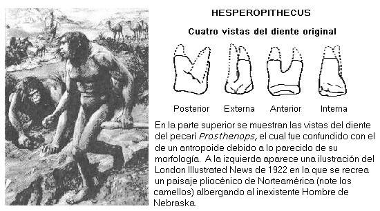

El hombre de Nebraska es uno de los “caballitos de batalla” favoritos de los creacionistas. El folleto creacionista de CHICK PUBLICATIONS, dice al respecto:
“Formado científicamente en base a un diente; más tarde se comprobó que era el diente de un cerdo extinto”.
En realidad el hombre de Nebraska o Hesperopithecus haroldcookii (como se llamó en su momento) resultó ser un error. La historia de esta peculiar especie empezó en 1922 cuando Harold J. Cook, un geólogo consultor encontró un diente fósil en los depósitos del Plioceno medio de Snake Crek al occidente de Nebraska. Este diente fue luego estudiado por Henry Fairfield Osborne, quien por aquel entonces se desempeñaba como director del Museo Norteamericano de Historia Natural.
Osborne determinó que el diente erosionado perteneció a un primate antropoide. Esta determinación animó a Osborne, ya que su hallazgo se constituiría en el primer registro fósil de primates antropoideos en Norteamérica. Osborne decidió bautizar la nueva especie con el nombre de Hesperopithecus haroldcookii, que significa “Simio del mundo occidental”. Sin embargo, tras un análisis posterior, el diente resultó ser de un pecarí extinguido del género Prosthenops.
Los creacionistas han tomado partido de este asunto y dicen con frecuencia “¿Cómo creerles a unas personas que no pueden distinguir un cerdo de un simio?” Sin embargo, cabe mencionar que los molares y premolares de cerdos y humanos son muy parecidos y este problema fue el error de Osborne. [1]
Cabe mencionar que fue el espíritu crítico de la ciencia lo que llevó al examen juicioso de la evidencia y la posterior rectificación. Tal aspecto nunca es mencionado, ni mucho menos puesto en práctica, por los creacionistas.
Notas
Volver a la sección Ciencias de los orígenes
Comentarios
Comments powered by Disqus